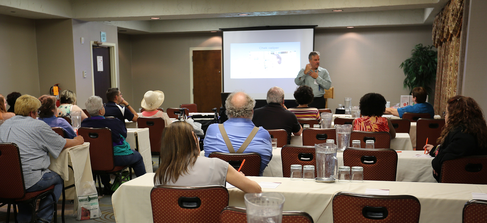
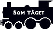
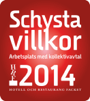

En bekräftelse skickas till den e-post du uppgav inom 24 timmar.
Konferens med Som Tåget Competence™
Risk Development & Synchronization

Stockholm 6 december 2014
Tack för din anmälan!
Tack för din anmälan!
En bekräftelse skickas till den e-post du uppgav inom 24 timmar.
Tid & plats
6 december 2014 kl 15.30
Scandic Anglais Humlegårdsgatan 23 102 44 Stockholm
Kostnad
Konferensen är kostnadsfri, men vid "no show" debiteras en avgift om 985 kr.

Denna konferens arrangerasav Som Tåget Competence™.
